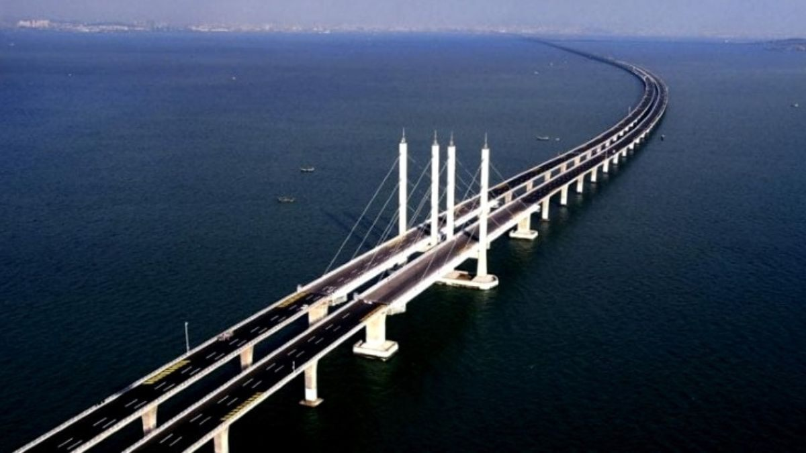

Weinan Weihe Grand Bridge |
|
Weinan Weihe Grand Bridge

The Weinan Weihe Grand Bridge is another remarkable bridge in China's extensive high-speed rail network. Key information includes:
This impressive structure not only facilitates high-speed rail travel but also demonstrates engineering prowess in managing the challenges posed by river crossings and flood-prone areas. It plays a vital role in connecting major cities in central China. |
|
|
© 2023 World's Biggest Bridges. All rights reserved. |
|